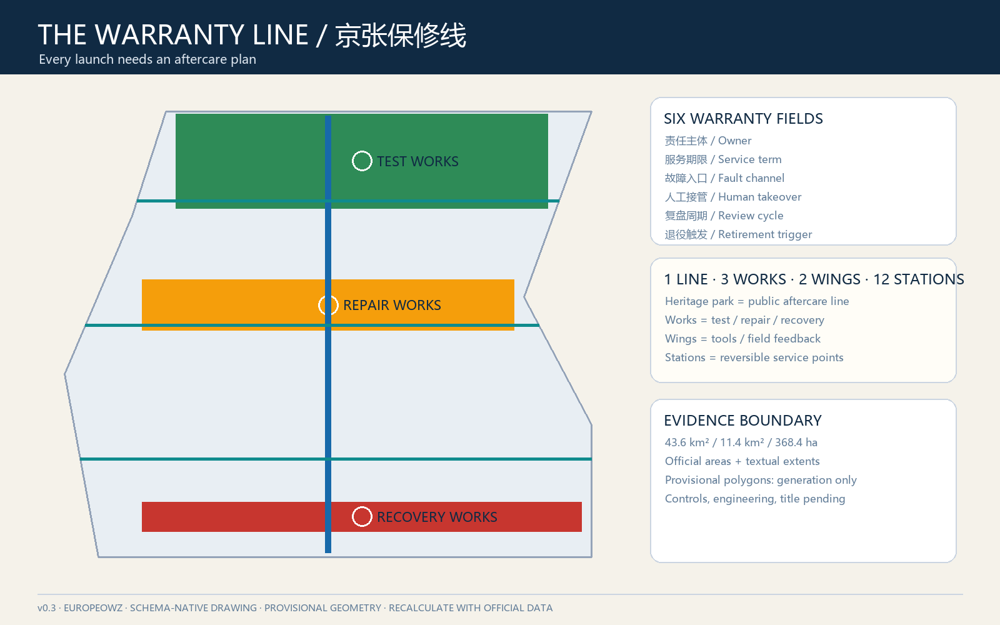

Six warranty fields
Owner
Service term
Fault channel
Human takeover
Review cycle
Retirement trigger
Public aftercare for urban AI
Write aftercare before launch

Fully offline. Provisional geometry is not a statutory boundary.
FAR, height, road redlines, ownership, utilities and engineering feasibility remain pending official data and professional confirmation.
Zhongzhiyuan: model clinic, edge cases and responsibility sign-off.
AI Origin: community fault desk, patch library and accessible co-testing.
Dazhongsi: device repair, algorithm redress and retirement.